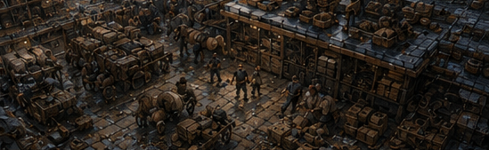
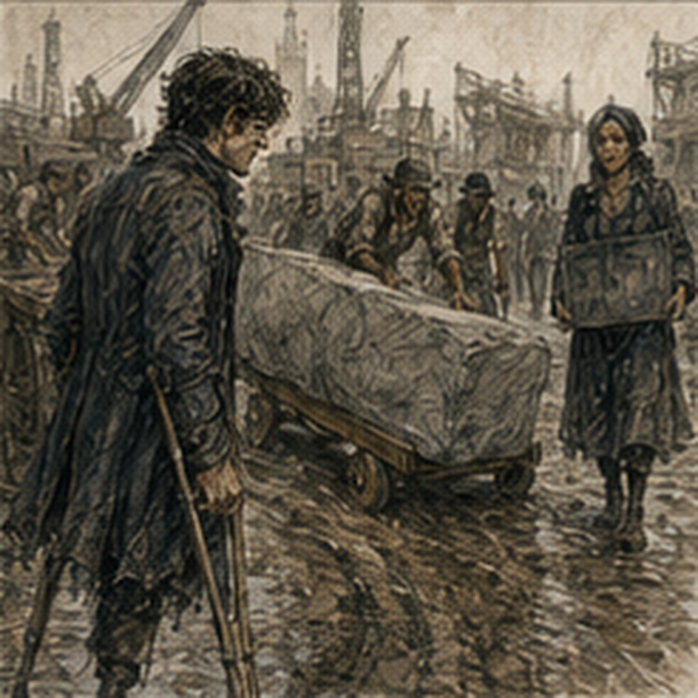

I did not go to Dorrin Stone first thing. This was because I had become wise. Also because it rained. Mostly rain. Not Darrowmere rain. City rain. Steady enough to turn the street outside my lodging into brown water and make everyone with somewhere to be reconsider how urgently they needed to be there.
I stood under the front awning with my coat on and watched it. Dorrin Stone sold rocks. Rocks would survive. I went back upstairs. This felt excellent for almost twelve minutes. Then I started thinking. Sorted kestrin shale. Treatment. Testing. Rebatching.
If Arlo was right, consistency might be manufactured without improving the actual process much. Buy enough variation, measure after, throw away the wrong behavior. Or sell the wrong behavior somewhere else. Nothing was waste if there was another tolerance band. Future artificers did this constantly. Not specifically with sinkstone. With everything. Mana glass. Conductive salts. Barrier inks. Bone ash. Cheap cores.
The sophisticated version had specifications, batch certificates, testing houses, arguments about standards, bribes, fraud, and at least one murder I vaguely remembered because someone had substituted powdered shell for something expensive. Maybe. Different decade. Different city. Possibly not murder. Memory was helpful. I stopped. Rain. Rocks. Later. I checked my hands. Better again.
The left blister had dried flat. Right palm still tender under pressure. I wrapped neither. Normal use.

Hessa would approve. Probably. I did not need Hessa’s approval to possess hands. That sentence sounded defensive even internally. I ate another breakfast. Rain tax. By the time it weakened, the morning had become late enough that Dorrin Stone would definitely be open and early enough that Arlo could not accuse me of arriving after closing. Good range.
I took the regulator because Arlo had said bring it next time. Then realized I was not going to Arlo. I left it. The note looked absurdly ordinary. Gloves. A week ago I would have treated them as equipment. A month ago I would have treated them as an expense. Old Greg would have had somebody else buy six pairs and forgotten what they cost.
I wanted a pair that fit. That was different. Tomorrow I would stand under the north freight arch and watch something clear something else by inches. Then I would go to Arlo and see what was inside a regulator. After that, maybe food. Maybe Jorren. Maybe nothing.
There were enough tomorrows now that I had started arranging them. I left the notebook open long enough for the ink to dry. Then took it again. No reason. Put it down. Left. Came back. Put it in the bag. Fine. Dorrin Stone occupied a long yard north of the kiln district. I knew I was close before I saw the sign because the road became worse. Stone carts. Heavy wheels. Broken edges. Mud packed with pale grit.
The yard itself had a waist-high wall and an open gate wide enough for two carts if neither driver valued the paint.
A board above it read:
DORRIN STONE
CUT. BROKEN. SORTED. DELIVERED.
Promising. Inside were rocks. A lot of rocks. This should not have surprised me. It did. Blocks stacked by size. Broken stone in bins. Pale limestone. Dark slate. Red aggregate. Gray shale. White chips. Sand under canvas.
Three workers moved a slab using rollers and language that would have improved Mara’s drink shop. Nobody looked magical. Good. I stood out of the way. A cart came through behind me. I moved farther out of the way. A woman carrying a slate board saw me.
“You buying?”
“Maybe.”
“What?”
“Kestrin shale.”
She pointed without stopping.
“Back left.”
I followed the direction. Three bins. One mostly fist-sized chunks. One smaller broken pieces. One dark fine aggregate.
Labels:
KES RAW
KES SORT
KES FINES
Easy. I looked. Raw varied wildly. Color. Veins. Porosity. Some almost smooth. Some crumbly. Sorted looked less variable. Not identical. Closer. A man with a shovel said, “Don’t climb in.”
“I wasn’t.”
He pointed at the bin edge.
“Then stay on this side.”
“I need to ask about processed material.”
“Office.”
He pointed. I went to the office. It was not an office. It was a roof with three walls, a counter, two stools, and enough paper to prove civilization had made a mistake. An older woman sat behind the counter with silver hair braided down her back. She was eating an apple and writing numbers. I waited. She finished the number. Not the apple.
“Yes?”
“I’m looking for processed kestrin shale.”
“What process?”
Good.
“Mana suppression.”
She bit the apple.
“Mild?”
“Potentially.”
“Packing?”
“Maybe.”
“Ward bed?”
“Maybe.”
“Heat sink?”
“Maybe.”
She stopped chewing.
“What are you making?”
“I don’t know yet.”
“Then you don’t know what you’re buying.”
Correct.
“I’m asking who processes it.”
“Why?”
“Because Arlo Arwick said you might know.”
That changed her expression slightly. Not suspicion. Recognition.
“Arlo still owes for two bins.”
Interesting. Not my business.
“Does he?”
“Yes.”
“I’ll tell him.”
“No.”
I stopped.
“Why?”
“Because he knows.”
Fair. She finished chewing.
“I’m Dorrin,” she said.
Person. Company. Of course.
“Greg,” I said.
“I know,” Dorrin said.
I waited. She pointed at my bag.
“Arlo’s regulator boy.”
Hostile network.
“Yes.”
“What do you want with kestrin?”
“I saw a processed batch with unusually consistent magical behavior.”
True.
“Whose?”
“Not mine to say.”
“Then I can’t tell you if it’s unusual.”
Also true.
“I’m not asking you to identify it.”
“You’re asking me to identify who could make it.”
“Yes.”
“That is identifying it with extra steps.”
I liked her. Annoying.
“I’m asking generally.”
“Generally, lots.”
“How lots?”
She looked toward the yard.
“Raw kestrin?”
“Yes.”
“Comes from six quarries if you count the bad one.”
“Which is the bad one?”
“All of them depending what you need.”
Arlo had relatives everywhere.
“Who sorts?”
“We do. Two other yards. Some processors buy raw and sort themselves.”
“By what?”
“Color. fracture. density if someone pays. Vein. grain. Sometimes reaction.”
“Mana reaction?”
“Yes.”
“How?”
She stared at me.
“Test it.”
“With?”
“Depends.”
I smiled. She did not.
“Low line?”
“Sometimes.”
“Contact?”
“Sometimes.”
“Heat first?”
“Sometimes.”
“Who pays for reaction sorting?”
“People who need it.”
“Who?”
“No.”
There. Limit.
“Customer privacy?”
“Customer boredom. Mine.”
Fair.
“How much does reaction sorting add?”
“What grade?”
“I don’t know.”
“What tolerance?”
“I don’t know.”
“What size?”
“I don’t know.”
“Then somewhere between one copper and too much.”
Useful. Not numerical. I looked back toward the bins.
“Do you process here?”
“Break. wash. sort. Some heat drying. No active treatment.”
“So no soaking.”
“No.”
“No mana exposure.”
“Not intentionally.”
“No controlled heating beyond drying.”
“No.”
“Who does active treatment?”
“Kilns. Ward shops. Two chemical yards.”
“Names?”
She looked at me. I waited. This was public trade information. Probably. She could still say no.
“Buying?”
“Questions.”
“That’s not buying.”
Right.
“What is the cheapest amount of sorted kestrin you sell?”
She pointed at a small sack under the counter.
“One copper.”
“How much?”
“Enough to make you regret carrying it.”
I bought it. Transactional clarity. She put my copper in a box.
“Now?”
“Now you are a customer.”
Excellent.
“Who treats for suppression?”
“Suppression specifically?”
“Yes.”
“Bale Ward Supply sells treated bed stone. Kett’s Kiln does heat work for three shops. Varo Chemical does salt treatment, but I don’t know if they sell direct.”
Three. My brain expanded. Bale. Kett. Varo. Which sorts before? Which tests after? Which rebatches? Which buys from Dorrin? Which might sell to North Quay? Which works with Silas Marris? No. Dorrin tapped the one-copper sack with two fingers.
“You bought one sack and I gave you three names.”
“Yes.”
“Start with those.”
“I was going to ask for more.”
“I know.”
I laughed. She bit the apple again.
“Which would you ask first?”
I said it before thinking.
“Bale.”
“Why?”
“Finished product.”
She nodded.
“Why not Kett?”
“Processing without specification tells me less.”
Another nod.
“Why not Varo?”
“Could be upstream of several products.”
She looked almost interested.
“Fine.”
“What?”
“Bale first.”
That was not evidence. It was a trade person’s judgment. Useful.
“Do they make their own?”
“Some.”
“Some?”
“Some bought.”
“From?”
“No.”
Right. I looked at the sack I had purchased.
“Is this reaction sorted?”
“No.”
“Then what did I buy?”
“Size and visible quality.”
“What visible quality?”
“Less crumbly. Lower obvious vein. Fairly even pieces.”
“Why would Arlo buy it?”
“He buys cheaper.”
Of course.
“What does he buy?”
“Raw broken.”
“Because he can tolerate variation?”
“Because he is cheap.”
Both could be true.
“Does he owe you for two bins of raw broken?”
Dorrin stared.
“Not your business.”
“Yes.”
Good. A worker came to the counter.
“North cart wants the pale cut,” he said.
Dorrin said, “Second stack, not first. First is Brin order.” The worker left. Her attention moved with him. Conversation over. I could feel it. One more question. No. I picked up the sack. Heavy. Not terrible. Maybe twenty pounds. My hands noticed. I shifted it against my hip. Dorrin saw.
“Carry from bottom.”
I adjusted. Better.
“Thanks.”
She had already returned to numbers. I left. The rain had stopped completely. The yard smelled like wet stone. I stood outside with one copper less and twenty pounds of material I did not need. This was familiar. Young Greg behavior. Buy thing because curiosity. Carry thing because pride. Discover later that thing had nowhere to go. Old Greg had improved. Mostly by having other people carry things.
I walked. Bale Ward Supply was east. I knew roughly where. Could go now. I had three names. Dorrin had explicitly recommended Bale first. Efficient. Logical. I turned east. Then the sack shifted. My right palm hurt. Not badly. Enough. I stopped.
Why was I carrying twenty pounds of shale to a ward shop? No reason. Could leave it home. Could give it Arlo. Could test it later. Could ask Dorrin to deliver. Too late. I kept walking. Young Greg. Definitely. At the next corner someone shouted my name. Not Alden. Not Jorren. Nessa. She stood under a striped awning with the laundry basket.
Food basket. Probably.
“You look stupid,” Nessa said.
“I am carrying rocks,” I said.
“I can see,” Nessa said.
“That is why,” I said.
She looked at the sack.
“What kind?”
“Kestrin shale.”
“Why?”
“Research.”
“Worse.”
She had three wrapped parcels in the basket and a bundle of green onions sticking out beneath a cloth.
“Where’s Jorren?”
“Working.”
“You know?”
“He has a job.”
“Yes.”
“You don’t?”
“I have several.”
“Then why rocks?”
Excellent question.
“I bought them.”

“That wasn’t the question.”
I liked her less when she was accurate. She handed a parcel to a man who approached from the side. He gave her two copper. No discussion. Routine.
“Chicken?” I asked.
“Pork.”
“Good?”
“No.”
“Honest.”
“Two copper.”
“I ate.”
“Then don’t buy.”
Again. Simple.
“What are you doing?” I asked.
“Selling food.”
“After?”
“Taking this basket back before my sister decides it belongs to me permanently.”
“Does she still do laundry?”
Nessa looked at me.
“Yes.”
Right. People did not change professions because I had met them once.
“Where are you going with the rocks?”
“Bale Ward Supply.”
“Why?”
“They sell treated bed stone.”
She waited. I had answered the surface question. Apparently not enough.
“For mana suppression.”
“Why?”
“Curiosity.”
“There.”
“What?”
“That’s the answer.”
She shifted the basket.
“You make everything sound like work.”
I looked at the sack.
“It is work.”
“Are you paid?”
“No.”
“Then maybe not.”
She left. No invitation. No lesson. Just basket. I continued east. Her sentence followed. Are you paid? Bad standard. Arlo was not paid to improve his regulator until someone bought it. Edrin was paid to investigate evidence. I was not paid to care.
Old Greg had spent enormous portions of his life on unpaid curiosity. Some became power. Some became disasters. Some became nothing. Still worth doing. Maybe. Bale Ward Supply had a proper sign. Blue-painted letters. Clean windows. Shelves visible inside. Much more respectable than Arlo. Suspicious. I entered with the sack. A bell rang.
A young man behind the counter looked at the sack, then at me.
“We sell that.”
“I know.”
“Then why bring your own?”
Good start.
“I have questions.”
He sighed. Dorrin had prepared me.
“Can I buy something first?”
His expression improved.
“Probably.”
“What is the cheapest treated kestrin you sell?”
He pointed at a tray of gray pellets.
“Bed fill. Three copper a scoop.”
“How much is a scoop?”
He showed me. Small. Maybe two pounds. Dorrin’s twenty pounds for one copper. Processing and selection multiplied price quickly.
“Suppression grade?”
“Basic.”
“Consistency?”
He looked at me.
“For what?”
There it was again.
“I’m comparing manufacturing approaches.”
“Are you a maker?”
“No.”
“Guild?”
“No.”
“Student?”
“Sometimes.”
“Of?”
“Magic.”
“That is not a trade.”
Hessa would like him.
“I’m Greg.”
He paused.
“Barrier Greg?”
No.
“Why does everyone call me things?”
He shrugged.
“Alden talks.”
Of course.
“Do you know Alden?”
“No.”
Worse.
“How do you know?”
“Customer mentioned him.”
The city was becoming dangerous. I pointed at the tray.
“Do you make this?”
“No.”
“Who does?”
“Supplier.”
“Which?”
He looked at me.
“No.”
Customer privacy. Actual this time.
“Can you tell me how it is specified?”
“Yes.”
Good. He reached beneath the counter and produced a card. Not secret. Sales information.
BASIC BED KESTRIN
LOW REACTIVITY VARIANCE
DRY USE
NO HIGH-HEAT GUARANTEE
REPLACE AFTER HEAVY EXPOSURE
Interesting.
“Low variance measured how?”
“House test.”
“What test?”
“Not mine.”
“Who knows?”
“Master.”
“Here?”
“No.”
“When?”
“Tomorrow.”
I wanted to ask where. No.
“What does heavy exposure mean?”
“Depends on application.”
I laughed. He looked confused.
“Sorry.”
“Do you want a scoop?”
“Yes.”
Why? Because I was stupid. Three copper. I paid. Now I had twenty-two pounds of kestrin shale. Excellent. He put the treated pellets in a paper packet. I held one through the paper. Similar size to seized material? Maybe. Could not compare directly. Do not invent.
“Can I ask who supplies if I’m not asking about a customer?”
“You are asking about our supplier.”
“Yes.”
“No.”
Fair.
“Do you sort after receiving?”
“Sometimes.”
There.
“What for?”
“Broken pieces. Color. Bad surface. Some batches get line checked.”
“Every piece?”
He laughed.
“No.”
“Sample?”
“Yes.”
“How many?”
“Depends.”
I smiled again. He became concerned.
“Are you all right?”
“Yes.”
“Good.”
“Do you ever rebatch?”
“What?”
“Combine lots after testing to hit a narrower behavior range.”
He frowned.
“Master might.”
Not his knowledge. Stop.
“Thank you.”
He nodded, relieved. I left. Two places. One raw supplier. One retail ward supplier. No Silas Marris. No Darrowmere. No suspicious reaction. No secret symbol. No one ran when I said kestrin. Good. I had also spent four copper. All of the millrace money. One copper at Dorrin. Three at Bale. I stopped in the street. Four copper. Half a day in cold water.
Goat. Reeds. Blisters. Mud. Converted into rocks. I laughed. A woman carrying folded cloth walked around me. Reasonable. Old Greg would have called this investment. Young Greg would have called it buying interesting things. Present Greg had no defense. I shifted the sack again. Heavy. I should have taken it home before Bale. Obviously. I started back. Halfway, I passed a delivery cart marked DORRIN STONE.
I stopped. The driver stopped because I was staring.
“What?”
“Nothing.”
He drove on. Delivery. The sign had literally said delivered. I had carried twenty pounds across the city because I had failed to read the fourth word. Excellent. At my lodging, the keeper saw the sack.
“No.”
I stopped.
“What?”
“No rocks upstairs.”
“It is one sack.”
“No.”
“Why?”
“Last tenant cracked a floor tile.”
“With twenty pounds?”
“With stupidity.”
Different load. Same mechanism.
“Where can I put it?”
She pointed behind the desk.
“Until tomorrow.”
“Thank you.”
“One copper.”
I stared.
“For storage?”
“For rocks.”
“That is not a category.”
“It is now.”
I paid. Five copper spent. The millrace had become negative one. This was getting better. I carried the small treated packet upstairs. Set it on the desk. Did not test it. I did not have Edrin’s equipment. I could make a tiny mana line. No. That would be deliberate testing. Hessa had allowed small utility, not repeated load experiments. Also uncontrolled comparison would tell me almost nothing.
Good.
I wrote:
DORRIN STONE
raw / sorted / fines sort by visible quality, size, sometimes density, grain, reaction does not actively treat Bale Ward Supply Kett’s Kiln Varo Chemical Dorrin recommends Bale first for finished suppression product
BALE
basic bed kestrin low reactivity variance dry use no high-heat guarantee replace after heavy exposure supplier undisclosed some receiving inspection some batches line checked rebatching unknown
Then:
SPENT 5 COPPER TO LEARN ROCKS ARE HEAVY.
Accurate. I sat back. The manufacturing chain had not narrowed. It had widened. Quarries. Stone yards. Sorters. Kilns. Chemical treatment. Ward suppliers. Testing. Retail. Potential rebatching. Delivery. Customers. Any unusually consistent batch could have become consistent at several points. Or multiple. Good. Harder. Better. I thought of Silas Marris. Trading company. Moves goods. Magical goods sometimes. Could sit anywhere in that chain without making anything.
Could own finished product. Could contract processing. Could simply buy. No evidence. Leave it. I thought of Darrowmere. Altered kestrin. Different inclusions. Different behavior. Could enter from another branch entirely. Leave it. I thought of Bale’s master arriving tomorrow. Could go back. Ask about house test. Supplier maybe still private. Kett’s Kiln. Varo Chemical. Three directions. Six. Nine. Face. No one was there to tell me.
I could still feel it. I closed the notebook. Outside, someone shouted about a missing dog. A cart wheel hit a pothole. The lodging keeper argued with a delivery boy. My hands did not hurt much anymore. My channels were quiet. I had rocks downstairs costing rent. Tomorrow I could ask better questions.
Tonight I had to figure out how to stop owning twenty pounds of shale. That was a different problem. Probably Arlo.